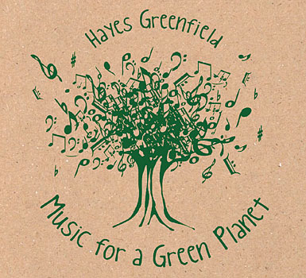

An inventive new twist to the greening of our future, This Green Planet, by Hayes Greenfield, is a playful, jazzy collection of children’s music that will appeal to audiences of all ages, using eclectic instrumentation and eco-friendly lyrics.
The album, released this past Earth Day, includes a refreshing look at some of our favorite children’s songs. Greenfield, a New York saxophonist, breathes new life into this collection of tunes. His solo sax introduces a new version of “She’ll Be Comin’ ’Round the Mountain:” Verse two becomes “We’ll be cruisin’ in our hybrid when she comes.” Each song, based on traditional children’s tunes, touches on themes of renewable energy, recycling, ecology and more.
The disc holds up to its name; stylistically transporting the listener to Brazil, New Orleans, the Caribbean and more - all without the use of fossil fuels. Plus, the disc was packaged using vegetable and soy-based ink as well as recycled paper.
Like a master weaver, Greenfield fuses jazz and kids’ music, children’s voices and established musicians throughout the recording in a way that is pleasantly cohesive. Visit the Web site to read more about the album and its musicians.
|
 DOTS & LINES LLC Looking for fun,"green" childrens' music? This Green Planet is the album to buy. |
|
|